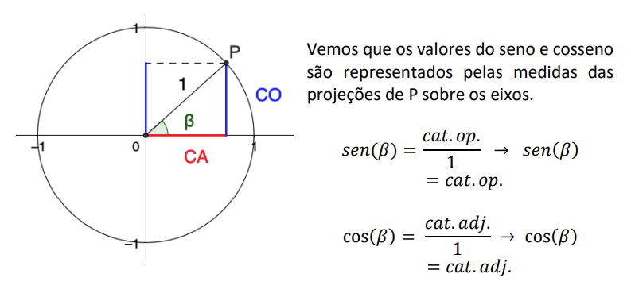
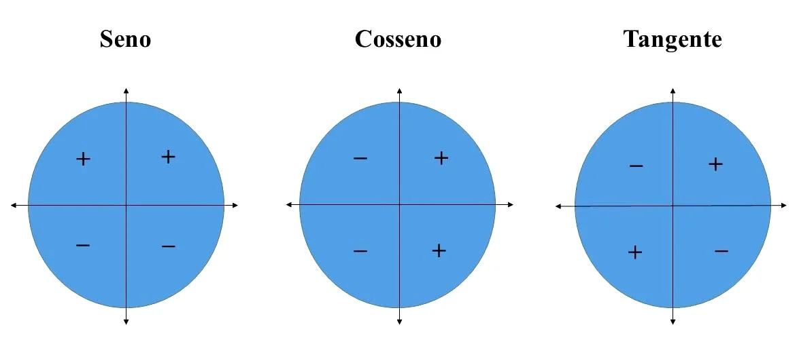

As razões trigonométricas, também chamadas de relações trigonométricas, são as possíveis divisões entre as medidas dos dois lados de um triângulo. As três razões mais conhecidas são: seno, cosseno e tangente
Seno e Cosseno :
Os quadrantes que formam o círculo trigonométrico são:
1ºquadrante=0º
2º quadrante=90º
3º quadrante=180º
4º quadrante=270º

Círculo Trigonométrico e seus Sinais :
Exemplo : (Retirado de uma questão da PUC por motivos pessoais)
Bom, o Ultimo item, foi o mais dificil de todos, e o único que eu realmente não entendi nada, por ser muito confuso, por isso talvez algumas coisas estejam um pouco erradas nessa parte do portfólio, mas tentei ao máximo fazer tudo sozinho apenas com o caderno de aula e os PDF's do Sigaa, no final desisti de tentar pesquisar um exemplo que desse para mim fazer sozinho e então coloquei um exemplo da PUC-RS, para conseguir enviar o Portfólio a tempo também, espero que tenha gostado do Portfólio, foi mais de 14 horas trabalhando o html para ficar perfeito, e mais algumas horas escolhendo e digitando sobre os conteúdos .
OBRIGADO PELA ATENÇÃO !!!